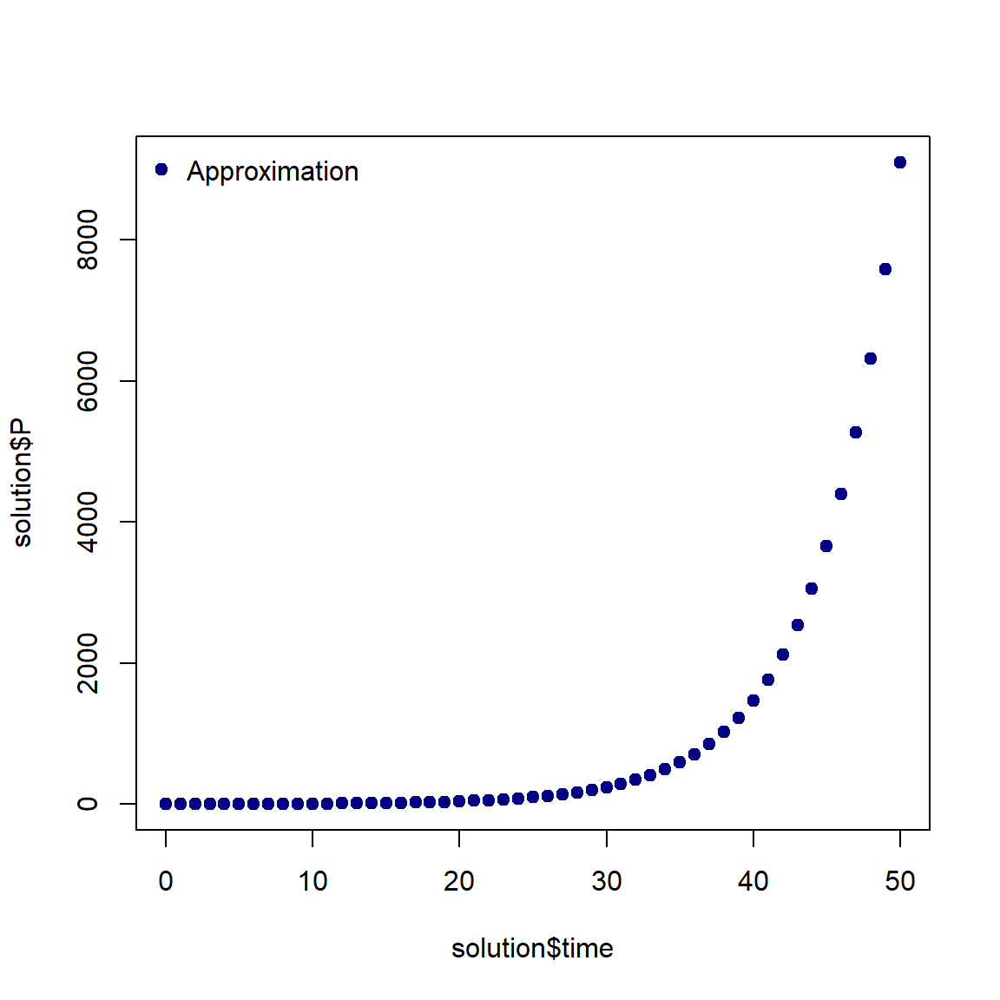
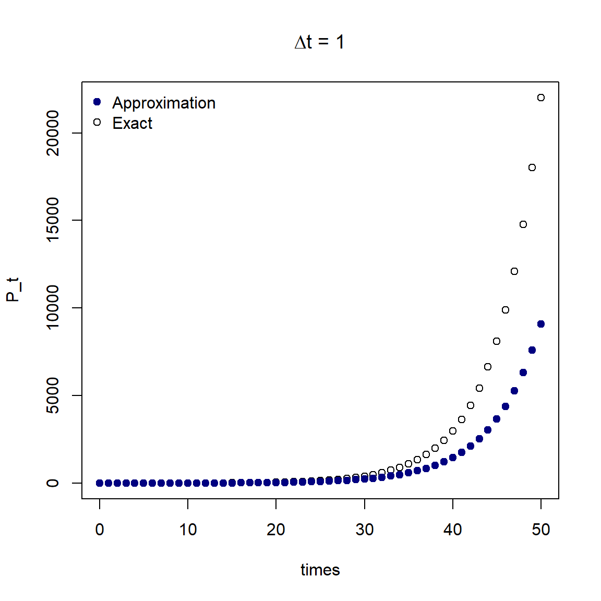
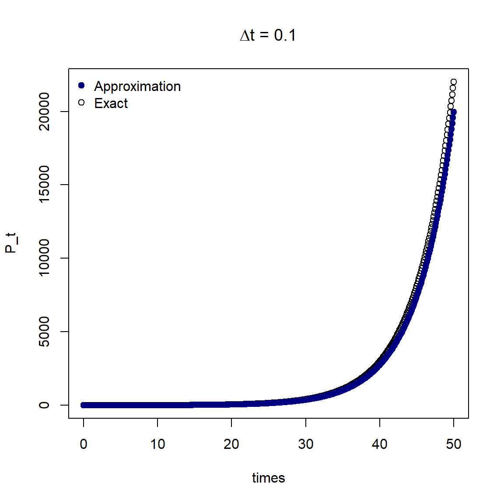
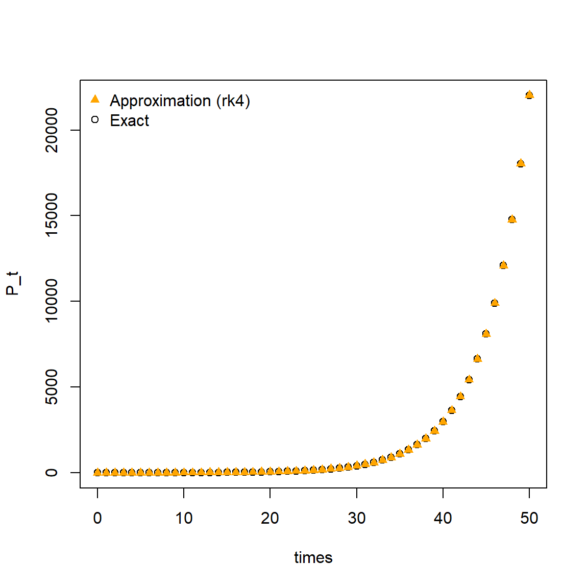

In our previous examples we have been able to find an analytical solution to the population growth ODEs (with and without carrying capacity). This means we have been able to write down an equation for the solution. However in some cases, it can be very difficult or impossible to find an analytical solution to an ODE. In these cases we use methods to find a numerical approximation of the analytical solution.
In the next lessons we will learn the principles of finding a numerical approximation to ODEs.
The Euler method
First we will revisit some notation of derivatives and integrals. We denoted the derivative of a function as:
\[\frac{dy}{dt}= f'(t)\]
then integrating \(f'(t)\) gave us \(f(t)\):
\[\int f'(t) dt = f(t).\]
For the population growth case, we have \(\frac{dP}{dt}= r P\) and we are interested in finding \(P(t) = f(t)\).
We start with the definition of a derivative for our ODE \(\frac{dP}{dt}\):
Instead of looking at the limit as \(\Delta t\) goes to 0, we instead assume that for very small \(\Delta t\) that the left hand side is approximately equal to the right hand side:
Our goal is to rearrange this equations so we have \(P(t+\Delta t)\) on the left hand side. First we can multiply both sides by \(\Delta t\):
\[\frac{dP}{dt} \Delta t \approx P(t+\Delta t)-P(t)\]
then we add \(P(t)\) to both sides:
\[\frac{dP}{dt} \Delta t + P(t) \approx P(t+\Delta t)\] which we can rewrite as: \[P(t+\Delta t)\approx P(t) + \frac{dP}{dt} \Delta t \] where we can write \(\frac{dP}{dt} = r P(t).\)
Now we have a method to approximate the value of the solution at one time step in the future \(t+\Delta t\).
We wish to find a numerical approximation from time 0 to the maximum time \(t_{max}\). We rewrite the above equation in the more general form:
\[ P_{n+1} = P_{n} + (r P_{n}) \Delta t. \] for time steps \(n = 0, 1, 2, \cdots, n_{max}\) where \(t_{n+1} = t_n + \Delta t\) and \(n_{max}\) is the total number of time steps.
This is called the Euler method.
The Euler method works by forward calculating the value of the solution in between time steps \(t\) and \(t+\Delta t\) using the gradient, \(\frac{dP}{dt}\). The accuracy of the numerical solution can depend on the time step size, we will see this in practice in the next lesson.
The Euler method in R
To find the numerical approximation at each time step we will use a for loop in R. We will specify \(\Delta t = 1\), i.e. daily time steps. The code below assigns the parameter values, sets up an empty data frame solution to store our approximation and then finds the numerical approximation at each time step and stores the value in the data frame solution.
# Assign parameter valuesP_0 <-1r <-0.2# Calculate the number of time stepsdelta_t <-1t_max <-50n_max <- t_max / delta_t# Set up empty data frame to store time and value of Psolution <-data.frame(time =0, P = P_0)# For n time stepsfor (n in1:n_max){# Find the current time time <- solution$time[n]# Find the current value of P P <- solution$P[n]# Calculate the next value of P next_P <- P + (r * P) * delta_t# Store the time and the next value of P solution[(n +1), ] <-c(time + delta_t, next_P)}plot(solution$time, solution$P, pch =19, col ="navy")legend("topleft", c("Approximation"), col ="navy", pch =19, bty ="n")

We have used the Euler method to find a numerical approximation of the solution to \(\frac{dP}{dt}\) at time steps of one day.
Comparison to analytical solution
In the case of the population growth ODE, we do have the exact equation of the analytical solution, so we can compare our numerical approximation to the exact solution. Recall that the equation for the solution is \[P(t)= P(0) e^{rt}.\]
The plot below shows the analytical solution and the numerical approximation using \(\Delta t = 1\).

The numerical approximation does not exactly match the exact solution.
If we look at the plot, we can see that when the population starts to grow more quickly, the approximation does not equal the true solution. What happens if we decrease the time step to \(\Delta t = 0.1\)?

Now the numerical approximation more closely matches the analytical solution.
Decreasing the time step improved the accuracy of our approximation. However, if we wanted to find the solution over a longer time period, more computation time would be needed. The Euler method is a very simple approximation, we can improve our numerical solution with a more complex method.
Runge–Kutta methods
The Runge–Kutta method, also known as RK4, is a method for finding a numerical solution of an integral.
In our Euler example, we used the expression for the derivative \(\frac{dP}{dt}\), to calculate the slope of our line at each time step. RK4 uses a similar principle, but instead of calculating one slope, RK4 calculates four different slopes (hence the name!).
For our population growth example, the RK4 method is as follows,
You may notice that the value \(k_1\) is the Euler method calculation. The remaining values are the calculations of gradients at different points within the interval \(t\) and \(t+\Delta t\).
To implement RK4 in R, we are going to use the calculation \(f'(t,P)\) multiple times, therefore we will write an R function to perform the calculation. Then as before, we will use a for loop to calculate the value of our numerical approximation at each time step, this time we calculate \(k_1\), \(k_2\), \(k_3\) and \(k_4\) at each iteration.
# Function to calculate and return slopefun <-function(t, P) { r * P}# Assign parameter valuesP_0 <-1r <-0.2# Calculate the number of time stepsdelta_t <-1h <- delta_ttmax <-50n_steps <- tmax / delta_t# Set up empty data frame to store time and value of Psolution <-data.frame(time =0, P = P_0)# for n_max time stepsfor (n in1:n_steps){# Find the current time time <- solution$time[n]# Find the current value of P P <- solution$P[n]# Calculate the values of the increments k1 <-fun(time, P) k2 <-fun(time + h /2, P + h /2* k1) k3 <-fun(time + h /2, P + h /2* k2) k4 <-fun(time + h, P + h * k3)# Calculate the next value of P next_P <- P + (1/6* h * (k1 +2* k2 +2* k3 + k4))# Store the time and the next value of P solution[(n +1), ] <-c(time + h, next_P)}# Find the value of P over time using the analytical solutiontimes <-seq(from =0, to = tmax, by = h)P_t <- P_0 *exp(r * times)plot(times, P_t)points(solution$time, solution$P, pch =17, col ="orange")legend("topleft", c("Approximation (rk4)", "Exact"),col =c("orange", "black"), pch =c(17, 1), bty ="n")

From the plot we can see that the RK4 approximation using daily time steps (\(\Delta t = 1\)) gives a very close approximation to the analytical solution.
We have learnt how to write our own code to perform numerical integration, but in practice we can use an R package.